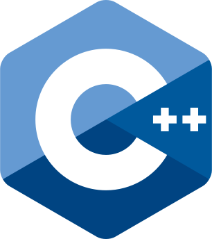

Reference Implementation
Protocol Standard
 C# (client)
C# (client)-  C++ (client)
 Java (server uses rupy)
Java (server uses rupy) HTML5 (client)
HTML5 (client)

- Generic: User - Item - Room
- JSON: Distributed async. database
- TCP/HTTP: Traverses all firewalls
- Multiplayer Physics (like Rocket League)
- Completely Parallel Non-Blocking Async.
- Global 100% Read Uptime (registered users
will always be able to login and play) - Low internal latency: statistics (Raspberry Pi 1)
- Open-Source: https://github.com/tinspin/fuse
- Integrated Forum: http://binarytask.com


- 150 concurrent users ~30% CPU on AWS T2 Micro (3 ECU burst?)
- Then we upgraded because CPU credits were
running low and not replenishing at night: - 200 concurrent users ~12.5% CPU on AWS T2 Medium (10 ECU burst?)
- 250 concurrent users ~15% CPU on AWS T2 Medium (10 ECU burst?)
- 450 concurrent users ~25% CPU on AWS T2 Medium (10 ECU burst?)
- 450 concurrent users ~40% CPU on AWS M4 Large (6.5 ECU)
- At peak the 3x node intercontinental cluster ran with
1100 concurrent players for ~20$/day. - This was during a 3 day surge where we added 50.000 players
which meant a revenue of ~50.000$/day. - When at 450 concurrent users each server receives 2.000
and sends 100.000 move messages per second while
keeping internal latency low enough for FPS games. - scales linearly / zero io-wait
- 100% stable / zero leakage
- Scalable - 1000 mess.in+out/s on Raspberry Pi 1 / Distr. Async. DB
- Simple - Virtual Host Hotdeploy / HTTP JSON File DB / HTTP API
- Stable - Infinite Uptime / No Maintenance / 8 Years Old
- Secure - One-Time Salt Password Hash Login

- One process for C#, C++ and HTML5 cross play, website and database!
- 200KB total size (excl. Java)
- Global 100% Read Uptime
- Open & Free
- 759 out of 205.875 customers refunded because their antivirus blocks the pull HTTP stream
- You need large database hard-drives; Meadow uses 100KB per user, also inodes run out
before disk space if you don't configure the /app mount with 'mkfs.ext4 -T small' - Peak garbage collect is 7ms once per minute on AWS T2 Micro instance
- Khronos (OpenGL/AL and Collada) C+ (C syntax compiled with gcc) Engine
- Off-Chain Micropayments


- None of the competition has an integrated
async-to-async distributed database or web
server that can scale across continents. - SpatialOS (Java, uses netty/akka) 80MB total size = x400!
None of the systems below can scale on
multiple cores across the same room
instance:- Much Different (C#) Defunct
- Goto & Play (Java)
- Exit Games (C++/C#) Only Windows
- Nakama (Go)
-
1) Install JDK and Ant, add their /bin folders to OS path.
2) Download/clone fuse-master from github.
Local (prototyping):
3a) Run "ant local" in the local fuse folder.
Remote (use separate domains for test and live):
4a) Register on binarytask. You will need a domain name and know how to add CNAME or A registers.
4b) Edit build.xml with your domain and the password from binarytask registration.
4c) Run "ant remote" in the local fuse folder.
5) Copy Fuse.cs/Fuse.cpp to your client project.
6) Edit to localhost or change from fuse.rupy.se to your domain depending on local/remote.
By default the project will use root.rupy.se as database, see Router.java.

- Dedicated: Minimum equivalent of two micro instances on AWS, Java SE 8u181 is free forever:
- "Cloud": We host and maintain on Google Cloud; pricing: host.binarytask.com
- LGPL but you have to show the logo on startup and without any
restrictions on having to share the modified original source.
- game_networking_json_vs_custom_binary_protocol_over_TLS/TCP
- why_do_game_developers_use_udptcp_ports_that_are_not_open_by_default?